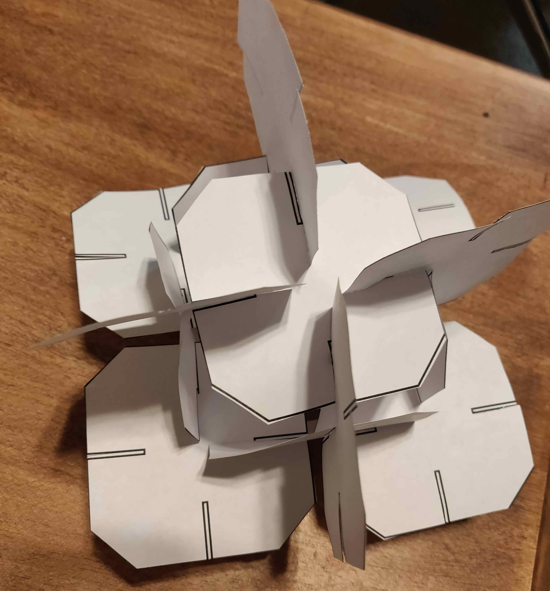
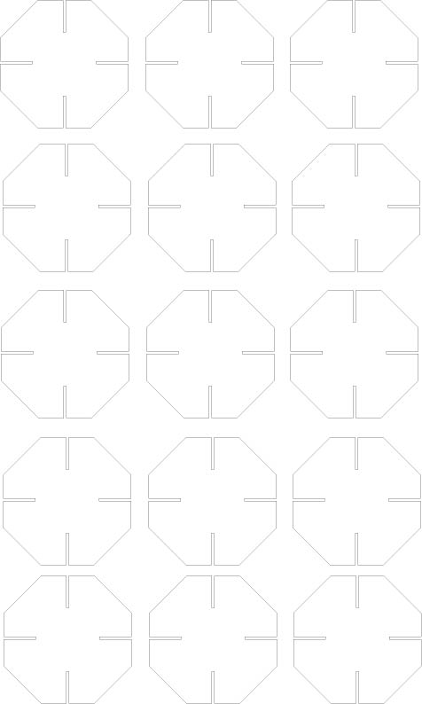
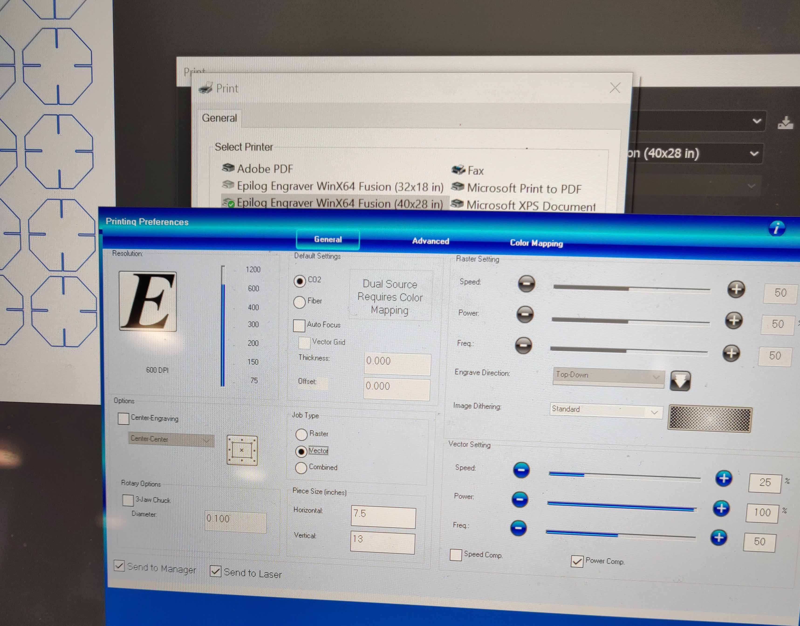
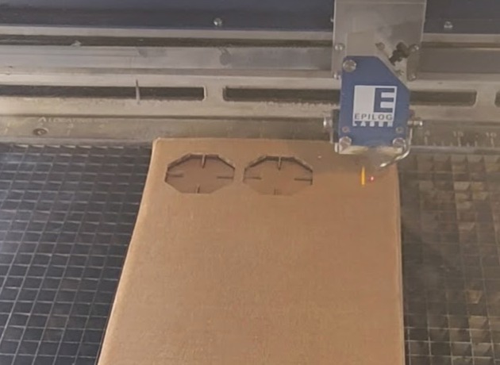
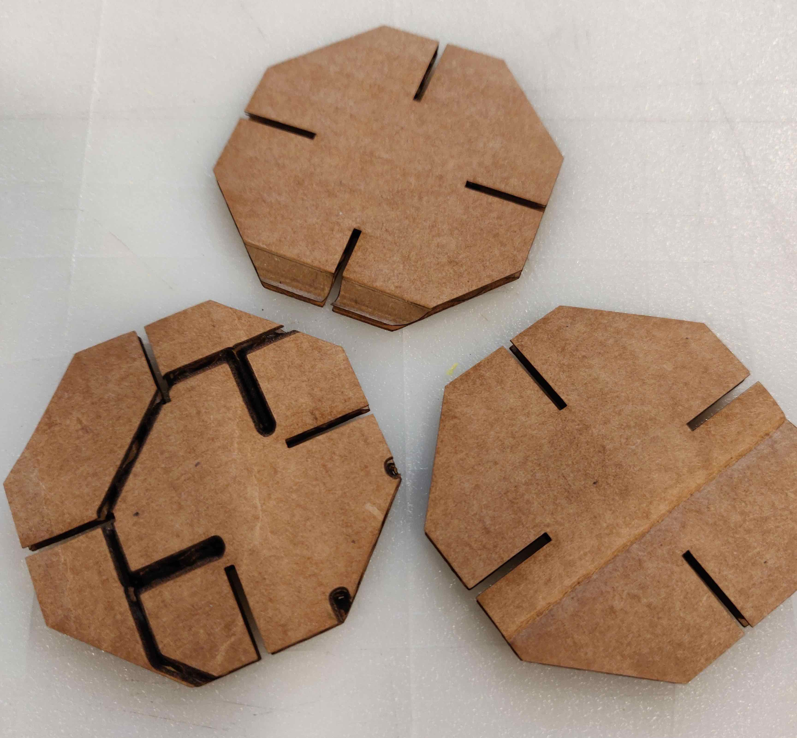

Check out my cardboard ball!

Here is all the documentation for assignment 2!
Ai source file

Step 2: When I was able to make a ball-like structure, I got started in Illustrator. I measured the cardboard to understand how big my slots should be.

Step 3: I went to the MILL to "print" my cardboard. I used a standard Amazon box and cut it into a rectangle. Then I made my Illustrator file the same size as the piece of cardboard. I did this twice to print two "pages" of cut-outs.
Step 4: I used Omari's printer settings (thanks Omari!) to get started with the printing. Tyson was at the lab to tell me that it was important for my cardboard to be flat. He also helped me when I realized that the stroke on my Illustrator file was too big. At this stage I also made my pieces 1/3 smaller to save cardboard.

Step 5: When I went to print the second piece, the printer had been recalibrated. Because I hadn't adjusted the height back to where it should be, my cardboard caught on fire. The staff taught me how to recalibrate the printer.

Pieces that were damaged in the crossfire:

Step 6: I put the pieces together and ta-da!